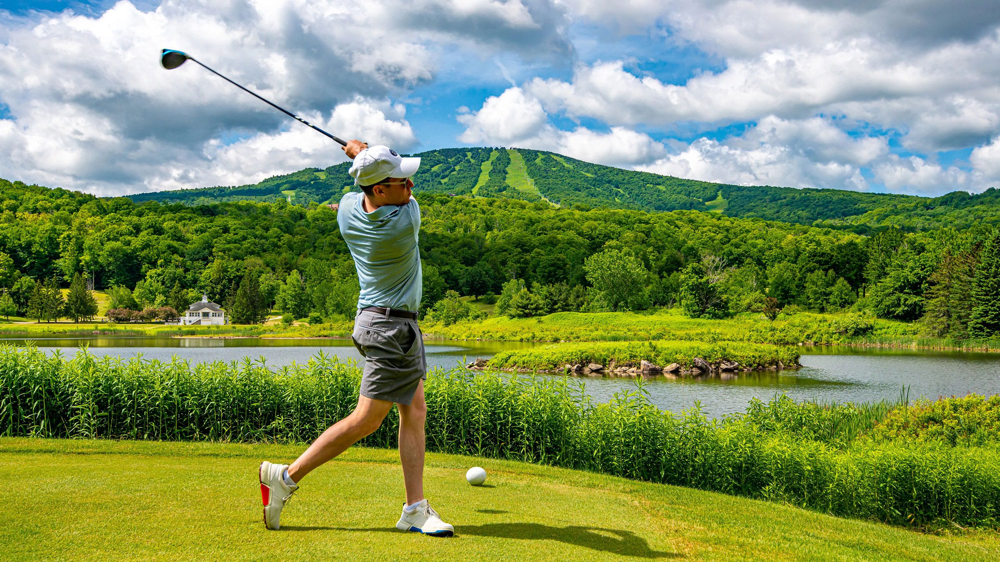

The Problem
Golf often feels out of reach
For many students, golf can seem like a sport reserved for people with expensive equipment, private lessons, and easy access to courses. That image alone can discourage beginners before they even try.
Even students who are interested may not know where to start, who to ask, or how to afford the basic costs of participating.
Equipment Costs
Clubs, bags, shoes, and balls can make getting started feel expensive immediately.
Course Access
Many students do not have transportation or affordable places nearby to practice.
Beginner Support
Without coaching or beginner programs, new players can feel excluded from the sport.
Barriers
Students face more than just price
The barriers to golf are financial, but they are also structural. Transportation, lack of school programs, and limited exposure can make the sport feel inaccessible even when a student is motivated.
- High upfront equipment cost
- Greens fees and practice range costs
- Limited transportation to local courses
- Few low-pressure beginner opportunities
Solutions
Access can be built intentionally
Schools and local organizations can make golf more realistic for students through shared equipment, beginner clinics, and partnerships with local courses or ranges.
Here are websites that help increase accessibility to golf: **First Tee** 👉 [https://firsttee.org/](https://firsttee.org/) **Youth on Course** 👉 [https://youthoncourse.org/](https://youthoncourse.org/)